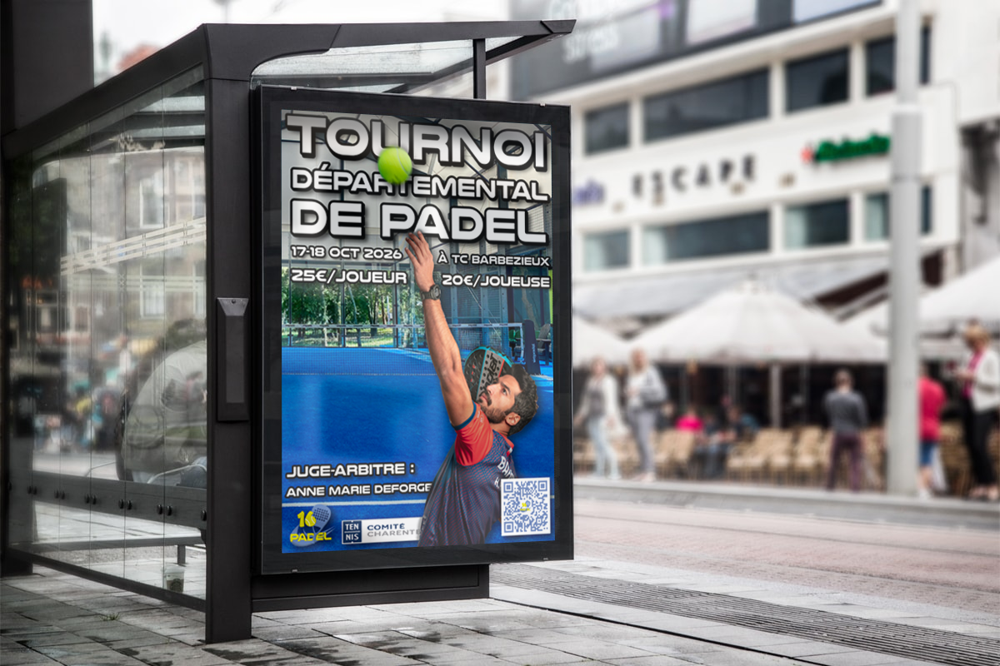

DA Club de padel

Contexte
Pour un projet d'infographie, le professeur nous avait demandé de réaliser la direction artistique d'un vrai club de padel.
Objectif
Quand tout le monde avait fini, le professeur choisissait les 4 meilleurs pour une partie de Padel avec lui. Le meilleur avait la chance de remplacer la direction artistique du club par la sienne. J'ai fini quatrième.
Développement
Après avoir réalisé un croquis que vous trouverez ci-dessous, nous l'avons implanté dans Illustrator pour repasser dessus. Nous y avons mis des couleurs (jaune, rouge et noir) et les lettres "MMI" en rouge avec une police assez forte. Puis après un après-midi de recherche et de travail intense, nous l'avons envoyé au BDE.